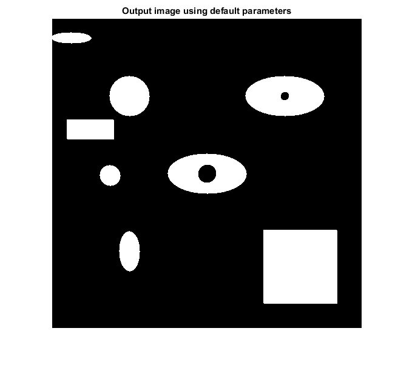
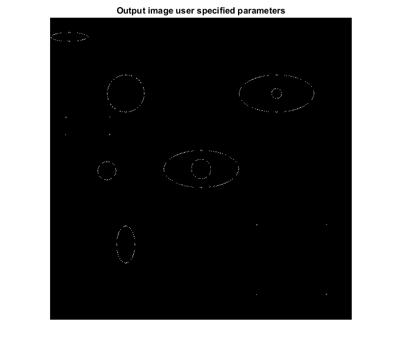

MORPHITERMOD_CVIP
morphitermod_cvip() - Iterative morphological modification of a binary image.
Contents
SYNTAX
outImage = morphitermod_cvip(binImage, setsSurr, n, boolFunc, rotate)
Input Parameters include :
- binImage - Binary image of MxN size.
- setsSurr - A row vector containing the ids of the surrounds. The maximum length is 14. For examples, [2 5 7] or [1:14].
surrounds id = 1 ----> 0 0 x
0 b 0
x 0 0 surrounds id = 2 ----> 0 1 x
0 b 0
x 0 0 surrounds id = 3 ----> 1 1 x
0 b 0
x 0 0
.
.
. surrounds id = 14 ----> 1 1 x
0 b 0
x 1 1 If multiple surrounds are selected, a_ij = 1 if any of
the surrounds are present. See reference 1 for other
surrounds, which are not shown above.(default: 7)
- n - Number of iterations. (default: 1)
- boolFunc - Boolean function L(a,b)
boolFunc = 1 ----> !a (i.e. NOT a)
boolFunc = 2 ----> ab (i.e a AND b)
boolFunc = 3 ----> a+b (i.e a OR b)
boolFunc = 4 ----> a^b (i.e a XOR b)
boolFunc = 5 ----> (!a)b (i.e (NOT a) AND b)
boolFunc = 6 ----> (a!b) (i.e a AND (NOT b))
(default: 1)
- rotate - Rotate each surrounds set. Checks each surrounds set in all six directions if rotate option is set ON.
rotate = 0 ----> OFF
rotate = 1 ----> ON(default: 0)
Output Parameter include :
- outImage - Output image of iterative morphological modification. It is of Boolean class.
DESCRIPTION
The function performs an iterative morphological modification of a binary image. To perform morphological modification,first,a_ij is found for each pixel;a_ij is 1 if (i,j)th pixel has the user specified surrounds or 0 otherwise. Then,morphological operation is performed between a_ij and b_ij,where b_ij is current pixel value(either 1 or 0). The user can specify the morphological operation by choosing one of the boolean function from the pre-defined list. A total of 14 surrounds sets are available. Each surrounds set has six surrounding pixels as we have considered NW/SE six connectivity. If rotate option is set ON, the surrounds are checked in all six directions. The morophological modification is repeated n times.
REFERENCE
1. Scott E Umbaugh. DIGITAL IMAGE PROCESSING AND ANALYSIS: Applications with MATLAB and CVIPtools, 3rd Edition.
EXAMPLE
% Read image I = imread('Shapes.bmp'); % Call function using default parameters O1 = morphitermod_cvip(I); % Number of iterations n = 3; % boolean function L(a,b) = ab f = 2; % sets of surrounds S = [1 2 3 5]; % rotate OFF r = 1; % Call function using user specified parameters O2 = morphitermod_cvip(I,S,n,f,r); % Display input image figure;imshow(I);title('Input image'); % Display output image figure;imshow(O1,[]);title('Output image using default parameters'); figure;imshow(O2,[]);title('Output image user specified parameters'); 
CREDITS
Author: Norsang Lama, June 2017
Copyright © 2017-2018 Scott
E Umbaugh
For updates visit CVIP Toolbox Website